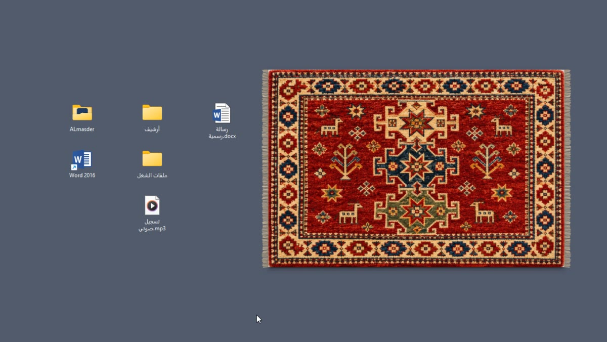
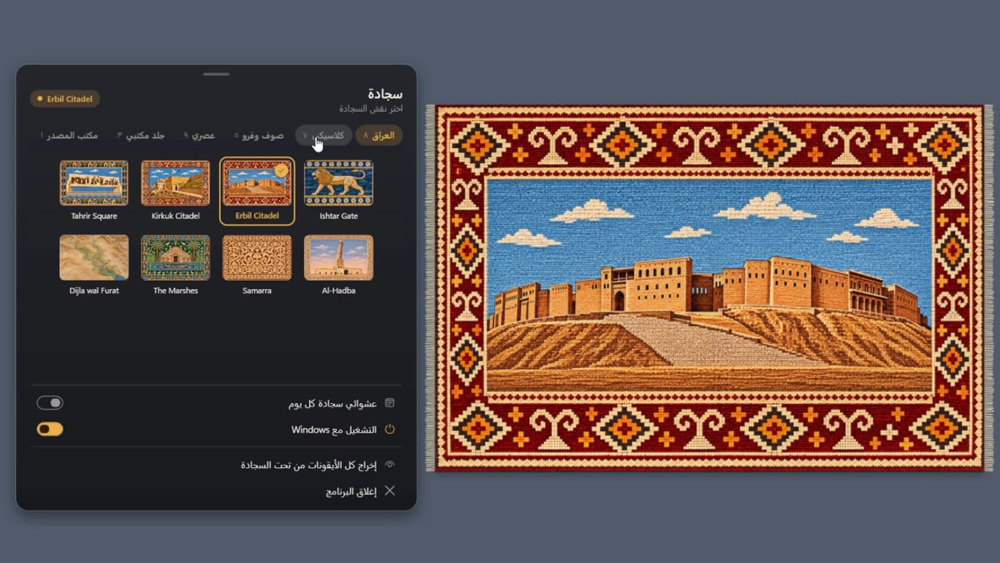

شنو يسوي سجادة؟
تخفي الأيقونات
تسحب أي أيقونة وتذبها على السجادة، فتختفي جوّاها. والملف يبقى بمكانه.
مثل السجادة الحقيقية
تحرّكها لمكان ثاني والأيقونات ما تتحرك وياها، وتكبّرها وتصغّرها من الطرف.
تشيل الزاوية
ترفع الزاوية وتشوف الأيقونات اللي تحتها، وتفتحها أو تسحبها لبرّه عادي.
أكثر من 30 تصميم
من بوابة عشتار وقلعة أربيل للكليم والصوف والجلد. وإذا تحب التغيير، سجادة جديدة كل يوم.
شوف بعينك



وأهم شي، الأمان
- ✓ما ينقل ملفاتك
- ✓ما يمسحها ولا يغيّر بيها شي
- ✓يتغيّر بس مكان الأيقونة على الشاشة
- ✓ما يحتاج إنترنت
- ✓ما يطلب صلاحيات مسؤول
- ✓إذا سدّيته، كل الأيقونات ترجع تبين
شلون تنصّبه
حمّل الملف
اضغط زر تحميل مجاني. إذا المتصفح كال إن الملف "غير شائع"، اختار الاحتفاظ (Keep).
شغّل Sajjada-Setup.exe
لأن البرنامج جديد، الويندوز ممكن يطلع هاي الرسالة الزرقاء. هذا طبيعي لأي برنامج جديد مو مشهور. اضغط More info وبعدها Run anyway:
Microsoft Defender SmartScreen prevented an unrecognized app from starting.
More infoشيل الترتيب التلقائي
click يمين على سطح المكتب، وبعدها عرض، وشيل العلامة من ترتيب الأيقونات تلقائياً. هيچ تكدر تحط الأيقونات تحت السجادة.
افرشها
السجادة تطلع على سطح المكتب. click يمين عليها حتى تختار التصميم اللي يعجبك.